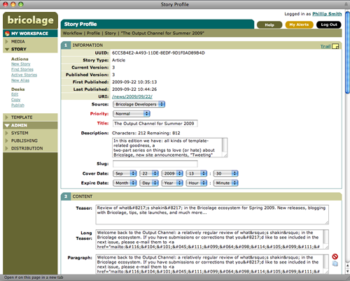
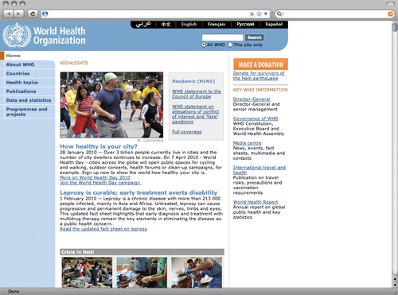
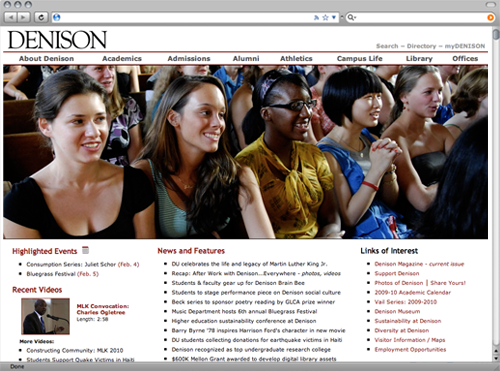
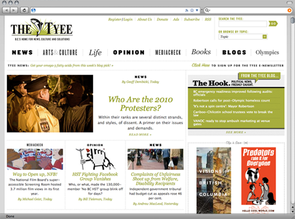
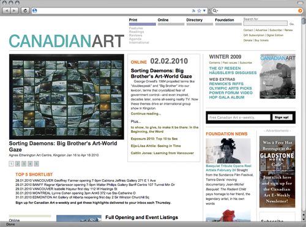
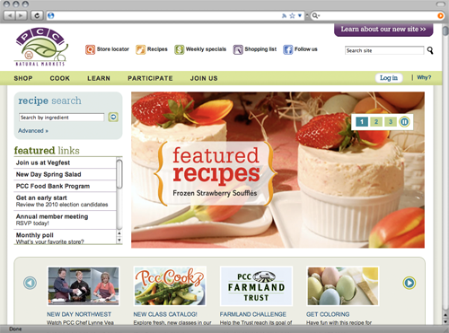

Bricolage for really, really smart people.
The only web publishing system that doesn’t think it’s smarter than you are.
- No boilerplate themes to restrict your creativity
- No assumptions about how you want your site to work
- No wasted time figuring out “The Right Way” to do it
Stop trying to hack your way out of someone else’s paper bag, and start enjoying total freedom.
Bricolage > Hello, world.

Bricolage > Running Bricolage (not for the faint of heart).
- Apache2
- mod_perl2
- PostgreSQL or MySQL
- Most of CPAN!
Seriosly, it’s not that hard to install. Consider it a right of passage. :) (And, if you’re lazy, just grab the virtual machine image.)
Bricolage > Five reasons you will love it.
- Pure Perl solution for enterprise content management
- Limitless potential with document modelling
- Output Channels: FTP, sFTP, Webdav, etc.
- Templating: There’s more than one way to do it
- Powertools: Bric::SOAP, CPAN, LDAP, etc.
Bricolage > Pure Perl solution
- Writen in Perl
- Perlish API
- Templating system is Perl
Bricolage > WTF is an “enterprise” solution?
AFAIK, Bricolage is the only pure Perl solution for enterprise content management.
- Bricolage > 10 years old: very, very stable.
- Check out the SLOC on Oloh: It’s impressive.
- Managing sites with > 100,000 documents && > 100 Editors
Bricolage > Document Modelling ftw!
- Think of a complex document that you need to publish to the Web
- How many individual elements make up that document?
- How do you make it easy for non-technical folks to create these complex document types?
- Welcome to Bricolage elements: It’s like Drupal’s CCK, MT’s & Wordpress’ “custom fields”, or Plone’s content types on steriods. Better yet, it’s recursive!
Bricolage > Output channels? Output anything!
- Bricolage is a workflow system, not a content delivery system
- Bricolage publishing content to a front-end server or service
- Output Channels make it possible to output anything. Seriously!
Examples: html, xml, JSON, PDFs, or post to an API. Anything goes, just like Perl.
Bricolage > Templating
There’s more than one way to do it:
- HTML::Mason
- Template::Toolkit
- Template::Declare
- Even PHP! (Not for beginners.)
Bricolage > The power tools you need built right in
- Load any CPAN module right from the bricolage.conf (and then use it in your templates, duh!)
- Pluggable authentication: LDAP, and those other ones.
Last, but not least: Bric::SOAP! A powerful way to interact with Bricolage from the command line, other programs, and so on.
Bricolage > Who the heck is using it?
More than 100,000 stories managed by Bricolage, including 4,500 versions of the home page, plus several thousand versions of each of the section home pages.
www.sportsnet.ca
Bricolage > Who the heck is using it?

Simultaneous publishing in Arabic, Chinese, English, French, Russian, and Spanish.
www.who.int
Bricolage > Who the heck is using it?

Bricolage is powering the Denison University web site, plus department and office web sites.
www.denison.edu
Bricolage > Who the heck is using it?

Bricolage manages the content and editorial workflow, and Drupal manages the interactivity. Great example of how Bricolage integrates with other systems.
www.thetyee.ca
Bricolage > Who the heck is using it?

Quarterly print publication with more than 6,000 articles managed by Bricolage.
www.canadianart.ca
Bricolage > Who the heck is using it?

With over 45,000 members, PCC Natural Markets is the largest consumer-owned natural food cooperative in the United States. Bricolage manages over 2,000 pages, as well as RSS feeds, job postings and event listings.
www.pccnaturalmarkets.com/
Bricolage > Where to go from here
- Bricolage project site: http://bricolagecms.org
- Github repository: github.com/bricoleurs/bricolage/
- Twitter: http://twitter.com/bricolagecms
- There’s even a LinkedIn group!